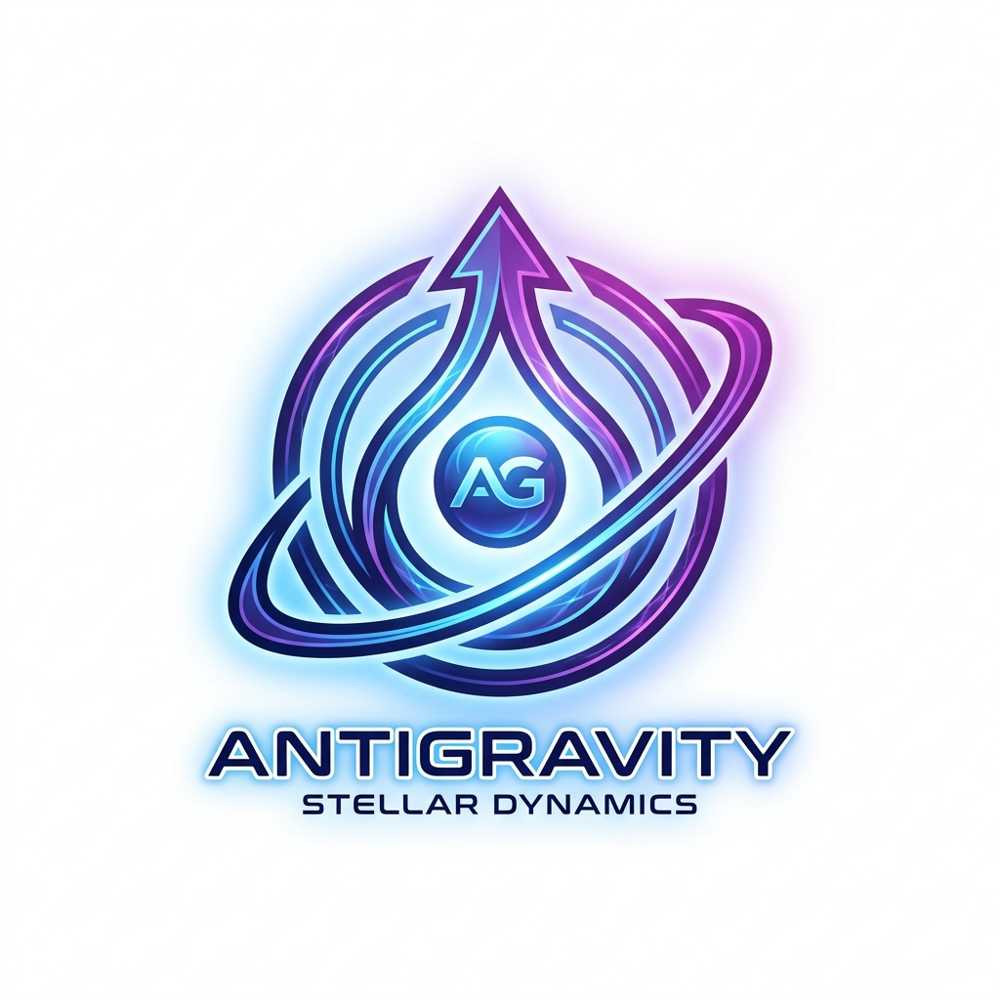

The Problem
Il Problema
AI-assisted development faces three critical challenges that make agents unreliable and expensive.
Lo sviluppo assistito da AI affronta tre sfide critiche che rendono gli agenti inaffidabili e costosi.
Context Window Limits
Limiti Finestra Contesto
Agents lose memory when context resets. Long conversations hit token limits. Critical knowledge gets forgotten.
Gli agenti perdono memoria quando il contesto si resetta. Le conversazioni lunghe raggiungono i limiti di token. La conoscenza critica viene dimenticata.
Multi-Agent Chaos
Caos Multi-Agente
Switching IDEs loses context. Different agents can't share state. Handoffs between sessions fail.
Cambiare IDE perde il contesto. Agenti diversi non possono condividere lo stato. I passaggi tra sessioni falliscono.
Token Waste
Spreco Token
Agents repeat prompts over and over. 90% accuracy per step = 35% success over 10 steps. Complex tasks chain failures exponentially.
Gli agenti ripetono prompt continuamente. 90% accuratezza per step = 35% successo su 10 step. Task complessi accumulano fallimenti esponenzialmente.
Why loom?
Perché loom?
Quick Setup
Setup Rapido
Interactive wizard detects your project and configures everything in minutes.
Il wizard rileva il tuo progetto e configura tutto in pochi minuti.
Multi-IDE Support
Multi-IDE
Works with VS Code, Windsurf, Claude Code, Cursor, Antigravity, IntelliJ IDEA and more.
Funziona con VS Code, Windsurf, Claude Code, Cursor, Antigravity, IntelliJ IDEA e altri.
Task Management
Gestione Task
Complete system with TASKS.md, BACKLOG.md, and automated workflows.
Sistema completo con TASKS.md, BACKLOG.md e workflow automatizzati.
TDD Workflow
Workflow TDD
Test-Driven Development with Red-Green-Refactor cycle.
Test-Driven Development con ciclo Red-Green-Refactor.
Natural Language
Linguaggio Naturale
Say "start task" or "run tests" — no script paths needed.
Dì "avvia task" o "esegui test" — nessun comando da ricordare.
DOE Architecture
Architettura DOE
Directives · Orchestration · Execution — 90% accuracy over 10+ steps.
Directives · Orchestration · Execution — 90% di accuratezza su 10+ step.
How It Works: DOE Architecture
Come Funziona: Architettura DOE
LLMs are probabilistic — 90% accuracy per step means only 35% success over 10 chained steps.
Gli LLM sono probabilistici — 90% di accuratezza per step significa solo 35% di successo su 10 step concatenati.
loom pushes complexity into deterministic code — the agent only makes decisions, not calculations.
loom sposta la complessità in codice deterministico — l'agente prende solo decisioni, non calcola.
D — Directives
D — Directives
SOPs in plain Markdown. Tell the agent what to do, what inputs are needed, what output to produce.
SOP in Markdown semplice. Dicono all'agente cosa fare, quali input servono, quale output produrre.
O — Orchestration
O — Orchestration
The AI agent reads directives, interprets intent, routes to the right script, handles errors and reports results.
L'agente AI legge le direttive, interpreta l'intento, instrada allo script giusto, gestisce errori e riporta i risultati.
E — Execution
E — Execution
Deterministic Python scripts do the actual work. Same input always produces the same output. 100% reliable.
Script Python deterministici fanno il lavoro. Stesso input = stesso output. Affidabili al 100%.
Supported IDEs
IDE Supportati
 Claude Code
Claude Code

AntigravityQuick Start
Inizia in 2 Minuti
No commands to remember. Just tell your AI agent what to do in plain language.
Nessun comando da ricordare. Parla semplicemente con il tuo agente AI.
1 — Create PROJECT.md
1 — Crea PROJECT.md
Create a PROJECT.md file in your project root describing what you're building, your tech stack, and any coding rules.
Crea un file PROJECT.md nella root del progetto descrivendo cosa stai costruendo, il tuo stack tecnologico e le regole di codice.
2 — Add loom
2 — Aggiungi loom
Add the loom/ folder to your project. Clone it, copy it, or install it — any method works.
Aggiungi la cartella loom/ al tuo progetto. Clonalo, copialo o installalo — qualsiasi metodo funziona.
3 — Say "read loom"
3 — Di' "leggi loom"
Open any IDE with an AI agent and just say "read loom". The agent configures everything automatically in seconds.
Apri qualsiasi IDE con agente AI e di' semplicemente "leggi loom". L'agente configura tutto automaticamente in pochi secondi.
Then use natural language — no commands needed:
Poi usa il linguaggio naturale — nessun comando necessario:
💡 First, check what tasks already exist:
💡 Prima, controlla quali task esistono già:
The agent reads your PROJECT.md and checks TASKS.md. If tasks exist, it shows them. If not, it offers to create them from your epics.
L'agente legge il tuo PROJECT.md e controlla TASKS.md. Se esistono task, li mostra. Se no, propone di crearli dalle tue epiche.
Alternative: one-liner install
Alternativa: installa con un comando
📋 PROJECT.md — Your Project's Brain
📋 PROJECT.md — Il Cervello del Tuo Progetto
The single source of truth that makes AI agents understand your project.
La fonte unica di verità che fa capire agli agenti AI il tuo progetto.
Goal
Goal
What you're building in 2-3 sentences
Cosa stai costruendo in 2-3 frasi
Stack
Stack
Technologies with versions (Python 3.11, React 18)
Tecnologie con versioni (Python 3.11, React 18)
Architecture
Architettura
3-5 key design decisions
3-5 decisioni chiave di design
Rules
Regole
MUST-FOLLOW coding standards
Standard di codice MUST-FOLLOW
The PROJECT.md Flow
Il Flusso PROJECT.md
When you say "read loom", here's what happens:
Quando dici "leggi loom", ecco cosa succede:
AI Prompts to Create PROJECT.md
Prompt AI per Creare PROJECT.md
For existing projects (with code):
Per progetti esistenti (con codice):
For new projects (from scratch):
Per nuovi progetti (da zero):
To refine existing PROJECT.md:
Per affinare un PROJECT.md esistente:
What Gets Created
Cosa Viene Creato
After setup, your project gets these files. Existing files are never overwritten.
Dopo il setup, il tuo progetto ottiene questi file. I file esistenti non vengono mai sovrascritti.
Project structure
Struttura progetto
TASKS.md
- 🔄 In Progress — active tasks with status and branch 🔄 In Corso — task attivi con stato e branch
- ⏸️ Not Started — planned but not started ⏸️ Non Avviato — pianificato ma non iniziato
- ✅ Completed — done, with version bump ✅ Completato — fatto, con versione aggiornata